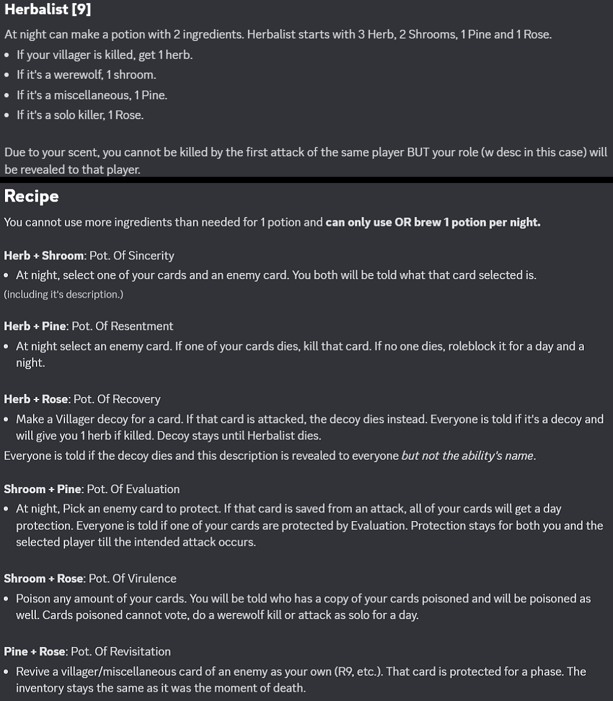

Restrictions
Gamemode
Modifiers
Available Cards
Banned Cards
Custom Cards
Other Information
This section contains the restrictions that were given to players during their deck setup.
General Restrictions
- Maximum number of cards in deck: 8 cards
- Maximum number of points for building deck: 50 points
Card-Based Restrictions
- Limit of Village Killers (Duelist, Ninja, Gunner, Musketeer, Witch) is 2.
- Limit of Village Night Protectors (Deflector, Ghost Lady, Doctor, Lamenter, Beast Hunter, Flagger and Forger) is 2 for each, and 3 in total.
- Limit of Role Changers (Cursed, Lurker, Werewolf Fan, Grave Robber) is 2.
- Limit of choosing Forkman or Regular Werewolf is 1 in total.
- Limit of choosing Astronomer or Rainmaker is 2 in total.
- Limit of choosing Avenger is 2.
This section contains the gamemode(s) that was played this game.
Creativity Workshop
While creating decks, each player can create 2 cards of their own and use them in their deck if host approves it. It will not be announced what custom cards exist in game. Description of a custom card will be revealed after its death. If a custom card uses an ability or kills another card, the name of the card that did the action will not be revealed. A player can also choose to not submit any custom cards or submit only one custom card.
Abilities of cards that hide roles upon death will not work on custom cards.
This section contained the modifiers that were played with in this game, if any. Modifiers are the special conditions that can alter the gameplay and game experience when activated.
No Modifiers were picked this game
This section contains the categories of cards that could be picked this game.
All Cards
These are all the cards available in a game by default, unless stated otherwise by the host.
Cards in Testing
These are the cards that are currently in testing mode and not fully added in game.
This section contains the cards that was banned from being picked this game (if any).
No cards were banned this game.
This section contains the list of custom cards that were created by the players for this game.
Caterpillar (6)
Each night can lay a seed on one of your cards. Next night, that card will form a cocoon around it, thus protecting it for the next 6 phases, after which it breaks. A card cannot perform its abilities while inside the cocoon. Already placed/existing abilities will still work.
Cocoon breaks on the first attack or lynch attempt. Cocoon can also be broken manually, but manually breaking it takes one phase during which a card cannot be protected.
- Alignment: Villager
- Aura: Good
Cat (5)
Once per game you may reveal the highest valued card of one of your opponents' deck and its location. On night 1 host will send a message in #news that says: "Announcement from an Unknown Card: 9hi nub".
- Alignment: Villager
- Aura: Good
Diplomat (5)
You automatically win if more than half of the alive cards belong to you, and if Diplomat is still alive.
- Alignment: Miscellaneous
- Aura: Unknown
Ancestor (6)
At night, you can select two or more cards to make them a tribe. This selection can't be changed. The first time a card from the tribe is attacked, it will be saved (except for day lynch). The second time a card from the tribe is attacked, it will die, and the saved card will die too. You can then make a new tribe.
- Alignment: Villager
- Aura: Good
- Protection: Passive
Vanity (9)
Every night, select an enemy card and a target. You will copy that card's ability and use it on the target.
You cannot receive feedback or information about the ability and the person vanity'd will receive the info and Vanity cannot select the same enemy card for the rest of the game.
Abilities that does not have a specific target & Factional ww/solo kills cannot be copied. If a card doesn't have any charges of ability left, its ability cannot be copied too.
- Alignment: Miscellaneous
- Aura: Unknown
Herbalist (9)

- Alignment: Miscellaneous
- Aura: Unknown
Stacker (6)
Each day he can choose to not vote to stack his current vote. Stacker can use stacked votes in day votings, but each stacked vote works only one time.
Stacker can use up to 4 votes at once maximum.
- Alignment: Villager
- Aura: Good
Engineer (12)
At night, Engineer starts with 200 metal and gains 30 metal every night. At night, it can build one of these structures:
- Sentry costs 130 metal. Sentry is placed on one of your cards; cards attacking it will be killed by Sentry and their protection will be bypassed (but it won't protect the card from attacks). After 2 attacks it dies. Engineer can use 150 metal ONCE to repair it and activate it same night (but not change the target on which it is placed).
- Dispenser costs 100 metal. Dispenser is placed between 2 neighbour cards, heals both of them so they won't die at night, dies after protecting from 2 attacks and cannot be repaired.
- Teleporter costs 100 metal. Engineer can place an entrance and an exit on one of his attackers and on an opponent's card. Attacking that card afterwards will ignore protection, Teleporter doesn't count as a protection.
- Alignment: Villager
- Aura: Unknown
Forture Teller (6)
You start knowing all the custom cards in the game and their descriptions, but not who has these cards.
- Alignment: Villager
- Aura: Good
Necromancer (7)
Once this card dies you can choose a card in your deck to revive secretly (it can revive the cards that died during the same phase or earlier). The inventory stays the same as it was the moment of death.
- Alignment: Villager
- Aura: Unknown
Guest (4)
Every night, the current owner of this card can send it to attach itself to another player's card, roleblocking it while its attached. That player will then own the card and can use it to vote during the day. If the card the Guest is currently attached to dies, Guest will also die. When the Guest leaves the original deck containing it, it will show it as (missing) and therefore cant be targeted. When this card dies, it will return to the original deck labeled dead.
- Alignment: Villager
- Aura: Good
Mr. Schrodinger (5)
This card owns 2 card slots. Each night, this card can choose which of the two card slots to occupy until the next night. Any interaction with the unoccupied slot will result to nothing, any information checks will say "No information was received".
- Alignment: Villager
- Aura: Good
This section contains other specifications about this game that is not mentioned anywhere above.